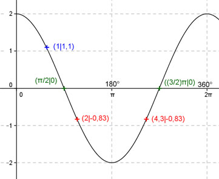

Aufgabe 162 Ergänzen Sie die Wertetabelle für x zwischen 0 und 2π: y = 2 cos -x x 1 2 oder 4,3 y 1,1 -0,83 Amplitude = 2 ; Periode = 2π Berechnung der Nullstellen: 2 cos (-x) = 0 ---> cos (-x) = cos x --> x = π/2 + k * π und k = 0, 1 --> x1 = π/2 oder x2 = (3/2)π N1 liegt bei π/2 oder 90°, N2 bei (3/2)π oder 270°.  Funktionswert an einer Stelle x ermitteln: x = 1 f(1) = 2 cos (-1) = 2 cos (-57,3°) = 1,1 gerundet. Berechnung der x-Werte für y = f(x) = -0,83: f(x) = - 0,83 eingesetzt, existiert einmal zwischen 0 und π bzw. 0° und 180° und zwischen π und 2π bzw. 180° und 360° (siehe Graph). 2 cos (-x) = -0,83 |:2 --> cos (-x) = -0,415 --> -x = arc cos (-0,415) = 2 gerundet --> x = -2, liegt nicht im Bereich zwischen 0 und 2π --> x1 = 2 oder x2 = (2π - 2) = 4,3 gerundet und α1 = 114,6° oder α2 = 245,4°.